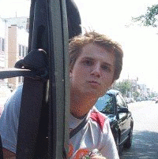

What is this site?
This is a site where I allow others to explore some of my hobbies, interests, and projects. It is by no means a resume and does not reflect my capabilities in a professional capacity. This site doesn't even list the full scope of my hobbies and interests. However, I have this for those who might be interested to know what I am up to or wish to have a small insight. You may be wondering about the picture of me on the motorcycle; I am using my brother's bike (Honda CRF450R).
UHARC CMD
If you're looking for UHARC CMD then you can download it by clicking here.
Graphic play
Click on the image below to see some stuff I've created or modified playing with Gimp and Inkscape.
Gallery Credits: Highslide JS (Click Here to view my custom Highslide JS settings)
Some jokes
Rules of the lab
- If an experiment works, something has gone wrong.
- When you don't know what you're doing, do it neatly.
- Experiments must be reproduceable, they should fail the same way each time.
- First draw your curves, then plot your data.
- Experience is directly proportional to equipment ruined.
- Always keep a record of your data. It indicates that you have been working.
- To do a lab really well, have your report done well in advance.
- If you can't get the answer in the usual manner, start at the answer and derive the question.
- In case of doubt, make it sound convincing.
- Do not believe in miracles--rely on them.
- Team work is essential, it allows you to blame someone else.
- All unmarked beakers contain fast-acting, extremely toxic poisons.
- No experiment is a complete failure. At least it can serve as a negative example.
- Any delicate and expensive piece of glassware will break before any use can be made of it.
|

|
There are 10 kinds of people in the world. Those who understand binary, and those who don't.
http://jokes4all.net/


{kind=link}
{kind=link}
{kind=link}
{kind=link}
{kind=link}
{kind=link}
{kind=link}
{kind=link}
{kind=link}
{kind=link}
{kind=link}
{kind=link}
{kind=link}
{kind=link}
{kind=link}
{kind=link}